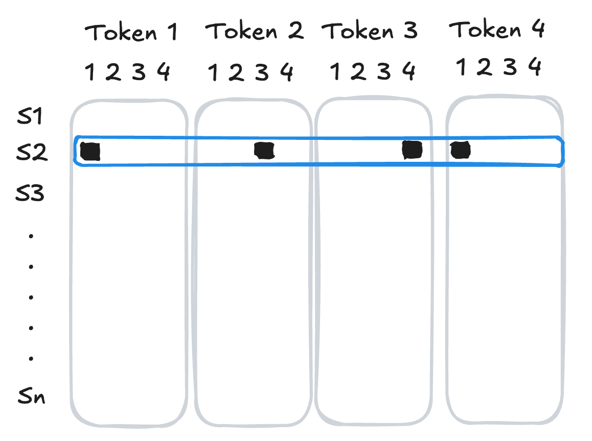
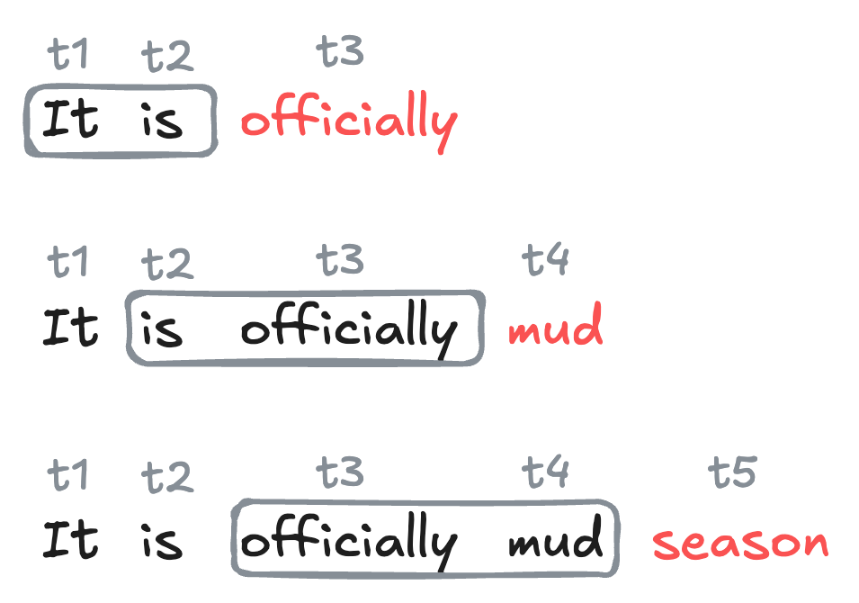
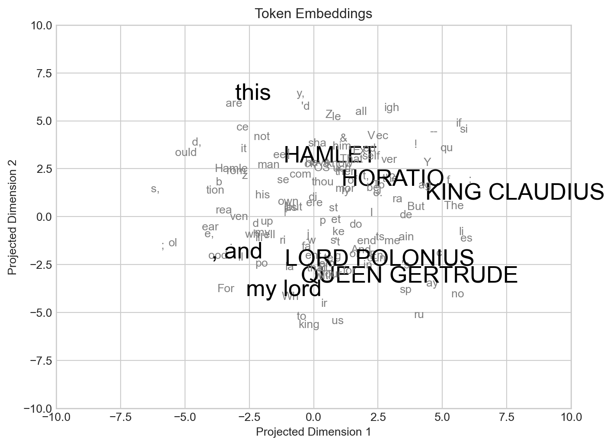

import pandas as pd
from collections import defaultdict
import random
import urllib.request
from tokenizers import Tokenizer
from tokenizers.models import BPE
from tokenizers.trainers import BpeTrainer
from torch.utils.data import Dataset, DataLoader
import torch
from torch import nn
device = torch.device("cuda" if torch.cuda.is_available() else "cpu")15 Tokens, Sequences, and Embeddings
Getting started with the foundations of generative language models.
Open the live notebook in Google Colab.
In this set of notes, we’ll begin our discussion of generative language models:
Definition 15.1 (Generative Language Model) A generative language model is a machine learning model whose primary functionality is to produce sequences of useful text.
Our aim by the end of these notes is to have a first, functioning generative language model that can produce text in the style of a piece of sample text passed by the user.
Our sample text for today is the complete text of Shakespeare’s Hamlet:
I accessed the text from the Folger Shakespeare Library.
url = "https://raw.githubusercontent.com/PhilChodrow/ml-notes-update/refs/heads/main/data/hamlet.txt"
text = "\n".join([line.decode('utf-8').strip() for line in urllib.request.urlopen(url)])Here are the first few lines:
print(text[0:193])The Tragedy of Hamlet, Prince of Denmark
Shakespeare homepage | Hamlet | Entire play
ACT I
SCENE I. Elsinore. A platform before the castle.
FRANCISCO at his post. Enter to him BERNARDO
BERNARDOLet’s now break down the task of producing some Hamlet-like text into a few key analytical units.
Tokens
From an abstract point of view, a body of text can be viewed as a sequence of symbols.
Definition 15.2 (Token in Language Modeling) A token is an atomic unit of text that serves as the basic unit of learning and prediction for language models. Tokens may be entire words, but may also be units of punctuation, sub-word units like prefixes and roots, or even individual characters.
An entertaining fad from a few years ago was seeing models incorrectly answer basic questions about character counts in certain words, reflecting a limitation due to their tokenization schemes.
There are many strategies for tokenization, and you can learn more about them in a dedicated course on natural language processing (NLP). For wotday, we’ll use a simple, popular tokenization strategy called byte pair encoding (BPE) The Tokenizer, BPE, and BpeTrainer classes from the tokenizers library, provided via HuggingFace, make it easy to apply BPE tokenization to our chosen body of text:
See these notes for more details on BPE.
tokenizer = Tokenizer(BPE(), )
trainer = BpeTrainer(min_frequency=80)
tokenizer.add_tokens(['\n'])
tokenizer.train_from_iterator([text], trainer, )
The vocabulary of the tokenizer is the set of all tokens that it has learned to recognize, along with unique integer IDs for each token. Let’s first see how many tokens are in the vocabulary:
vocab = tokenizer.get_vocab()
print(f"Vocabulary size {len(vocab)}")Vocabulary size 330We can inspect a few tokens and their corresponding IDs.
BPE is a partially randomized process, which means that the set of learned tokens may look different each time.
pd.DataFrame(vocab.items(), columns=['token', 'id']).head(10)| token | id | |
|---|---|---|
| 0 | ea | 90 |
| 1 | y | 62 |
| 2 | A | 11 |
| 3 | me | 206 |
| 4 | ther | 161 |
| 5 | is | 133 |
| 6 | tion | 195 |
| 7 | e, | 225 |
| 8 | ce | 178 |
| 9 | En | 312 |
We can use the encode method of the tokenizer to convert our desired text (or any other text) into a sequence of token IDs:
encoded = tokenizer.encode(text).ids
print(f"Number of encoded tokens: {len(encoded)}")Number of encoded tokens: 90033Our new data now looks like a sequence of integer ids. We can always convert back to the actual token text using the decode method of the tokenizer. Let’s see how this works for the first few tokens:
for i in range(10):
token_id = encoded[i]
print(f"{token_id:5d} --> {tokenizer.decode([token_id])}") 202 --> The
30 --> T
129 --> ra
44 --> g
278 --> ed
75 --> y
132 --> of
311 --> Hamle
170 --> t,
26 --> PNext-Token Prediction
The current dominant paradigm in generative language modeling is called next-token prediction. The idea is to train a model to predict the next token in a sequence of tokens, given the previous tokens:
Definition 15.3 (Next-Token Prediction) In next-token prediction, we treat a sequence of tokens \(t_1,t_2,\ldots,t_k\) as a set of features, and attempt to use them to predict the identity of the next token \(t_{k+1}\) in the sequence.
Context Length and N-Gram Models
There are many different kinds of models which aim to solve the next-token prediction problem. For this chapter, we’ll focus on a simple class of models called n-gram models, which use a fixed number of previous tokens as features to predict the next token.
Definition 15.4 (Context Length, N-Gram Models) The context length is the number of previous tokens that we use as features to predict the next token in a next-token prediction problem.
A model that uses a fixed context length of \(n\) is often called an (n+1)-gram model.
For example, a model with context length 1 is often called a bigram model, since it encodes relationships between pairs of tokens (one feature, one target). A model with context length 2 is often called a trigram model, since it encodes relationships between triples of tokens (two features, one target).
Datasets for Next-Token Prediction
We’re now ready to implement a data set for next-token prediction using an \(n\)-gram model. To do this, we need to organize our sequence of token ids into a data set of training examples, in which each example consists of a sequence of tokens as features and the next token as the target. We can implement this using a custom Dataset class in PyTorch. In the __init__ method we save several instance variables and tokenize the input text, while in the __len__ and __getitem__ methods we implement the logic for how to index into the data set to get the features and target for each example.
For convenience purposes only, we’ve arranged for the dataset to return both the token ids and the corresponding text for each example. In practice, only the token ids are needed for training – the text is just for debugging and our own entertainment.
class TextDataSet(Dataset):
def __init__(self, text, tokenizer = Tokenizer(BPE()), trainer = BpeTrainer(min_frequency=10), context_length = 5):
self.context_length = context_length
self.text = text
self.tokenizer = tokenizer
self.tokenizer.train_from_iterator([text], trainer)
self.tokens = self.tokenizer.encode(text).ids
self.vocab_length = self.tokenizer.get_vocab_size()
def __len__(self):
1 return len(self.tokens) - self.context_length
def __getitem__(self, key):
2 target = torch.tensor(self.tokens[self.context_length + key])
3 features = self.tokens[key:(self.context_length + key)]
feature_tensor = torch.tensor(features, dtype=torch.long)
4 feature_text = self.tokenizer.decode(features)
target_text = self.tokenizer.decode([target])
return feature_tensor.to(device), target.to(device), feature_text, target_text- 1
-
The number of training examples is equal to the total number of tokens minus the context length, since we need at least
context_lengthtokens to form the features for the first example. - 2
- The target token is the token that follows the context in the sequence.
- 3
- The features are the tokens that form the context.
- 4
- We decode the feature and target tokens back into text for debugging and interpretability.
We can construct the data set like this:
data = TextDataSet(
text,
tokenizer = tokenizer,
trainer = trainer,
context_length = 5
)
print(f"Number of training examples: {len(data)}")
print(f"Vocabulary size: {data.vocab_length}")
Number of training examples: 90028
Vocabulary size: 330Having constructed the data set, we can query it with simple indexing.
for i in range(5):
X, y, X_text, y_text= data[i]
print(f"Example {i}: {X.tolist()} -> {y}")
print(f" : '{X_text}' --> '{y_text}'")
print("")Example 0: [202, 30, 129, 44, 278] -> 75
: 'The T ra g ed' --> 'y '
Example 1: [30, 129, 44, 278, 75] -> 132
: 'T ra g ed y ' --> 'of '
Example 2: [129, 44, 278, 75, 132] -> 311
: 'ra g ed y of ' --> 'Hamle'
Example 3: [44, 278, 75, 132, 311] -> 170
: 'g ed y of Hamle' --> 't, '
Example 4: [278, 75, 132, 311, 170] -> 26
: 'ed y of Hamle t, ' --> 'P'
Let’s add a data loader so that we can train the model with stochastic optimization:
loader = DataLoader(data, batch_size = 1024, shuffle = True)A single batch of data from the loader consists of a tensor of features (token ids) and a tensor of targets (token ids), along with the corresponding text for each example in the batch:
X_batch, y_batch, X_text_batch, y_text_batch = next(iter(loader))
print(f"Batch of features (token ids): {X_batch.shape}")
print(f"Batch of targets (token ids): {y_batch.shape}")Batch of features (token ids): torch.Size([1024, 5])
Batch of targets (token ids): torch.Size([1024])From Tokens To Features: One-Hot Encoding
Before we’re ready to train a model for next token prediction, we need to convert our token ids into a format compatible with operations like matrix multiplication.
We don’t want to simply use the ids themselves as the features, since token
29 is not necessarily “more” than token 10 in a meaningful way.As our first attempt to convert token ids into feature vectors, we’ll use one-hot encoding: we represent each token as a vector of zeros with a single one in the position corresponding to the token’s id. For a sequence of tokens, we concatenate the one-hot vectors for each token to get a single feature vector for the entire sequence.

[1, 3, 4, 1].
The function below implements this logic on a batch of sequences of tokens.
from torch.nn.functional import one_hot
def one_hot_batch(batch_tokens, m_tokens):
return torch.cat([
one_hot(batch_tokens[:,i], num_classes = m_tokens).float() for i in range(batch_tokens.shape[1])
], dim = 1)Now, if we take a batch of data…
X_batch, y_batch, X_text_batch, y_text_batch = next(iter(loader))
print(f"Batch of features (token ids): {X_batch.shape}")
print(f"Batch of targets (token ids): {y_batch.shape}")Batch of features (token ids): torch.Size([1024, 5])
Batch of targets (token ids): torch.Size([1024])…we can convert the features into one-hot encoded vectors:
X_batch_one_hot = one_hot_batch(X_batch, m_tokens = data.vocab_length)
print(f"Batch of features (one-hot): {X_batch_one_hot.shape}")Batch of features (one-hot): torch.Size([1024, 1650])The second dimension of X_batch_one_hot.shape is equal to context_length * vocab_length, since we have context_length tokens in the features, and each token is represented by a one-hot vector of length vocab_length.
Next-Token Prediction with Neural N-Gram Models
We’re now ready to train a simple neural network to perform \(n\)-gram next-token prediction with one-hot encoded features. One can do this with any classification model, but these days neural networks are by far the most popular choice for this task. For this example, we’ll use a simple two-layer neural network. For convenience we’ll place the one-hot encoding step inside the forward method of the network.
class NTP(torch.nn.Module):
def __init__(self, input_size = 700, hidden_size = 200, vocab_size = 140):
super().__init__()
self.vocab_size = vocab_size
self.fc1 = nn.Linear(input_size, hidden_size)
self.fc2 = nn.Linear(hidden_size, vocab_size)
def forward(self, X):
out = one_hot_batch(X, m_tokens = self.vocab_size)
out = torch.nn.ReLU()(self.fc1(out))
out = self.fc2(out)
return outThe input size of the network must correspond to the one-hot encoded feature vectors, which have length context_length * vocab_length. The output size of the network must correspond to the number of possible classes for the target token, which is equal to vocab_length.
model = NTP(
input_size = data.context_length*data.vocab_length,
hidden_size = 200,
vocab_size = data.vocab_length
).to(device)Now we’re ready to train the model, just like we would on any other classification task.
loss_fn = torch.nn.CrossEntropyLoss()
opt = torch.optim.Adam(model.parameters(), lr=0.01)
for epoch in range(20):
total_loss = 0
for X_batch, y_batch, _, _ in loader:
opt.zero_grad()
outputs = model(X_batch)
loss = loss_fn(outputs, y_batch)
loss.backward()
opt.step()
total_loss += loss.item()
print(f"Epoch {epoch} loss: {total_loss / len(loader)}")Epoch 0 loss: 4.198740696365183
Epoch 1 loss: 3.089286809617823
Epoch 2 loss: 2.6861340403556824
Epoch 3 loss: 2.39065467227589
Epoch 4 loss: 2.1485305198214273
Epoch 5 loss: 1.942686616019769
Epoch 6 loss: 1.7685348621823571
Epoch 7 loss: 1.615598808635365
Epoch 8 loss: 1.4866923039609736
Epoch 9 loss: 1.3706467056816274
Epoch 10 loss: 1.2701812975785949
Epoch 11 loss: 1.178736987439069
Epoch 12 loss: 1.091598390178247
Epoch 13 loss: 1.023171904412183
Epoch 14 loss: 0.9575221585956487
Epoch 15 loss: 0.8990941108627752
Epoch 16 loss: 0.8424936370416121
Epoch 17 loss: 0.7954272472045638
Epoch 18 loss: 0.7513461790301583
Epoch 19 loss: 0.7109762951731682Having trained the model, we can use the forward method to get the model’s predicted scores for the next token:
X, y, X_text, y_text = data[220]
# get the model's predicted scores for the next token
# need to add and then remove a batch dimension to X since the model expects a batch of data as input
preds = model.forward(X.unsqueeze(0)).squeeze(0)
# top 5 preds and their corresponding token ids
top_preds = torch.topk(preds, k=5).indices.tolist()
print(f"Feature text: '{X_text}'")
print(f"Top 5 predicted token IDs: {top_preds}")
print(f"Top 5 predicted token texts: {[data.tokenizer.decode([token_id]) for token_id in top_preds]}")
print(f"Scores: {[f'{x:.2f}' for x in preds[top_preds].tolist()]}")
print(f"Actual token ID: {y}")Feature text: 'ar e f u ll'
Top 5 predicted token IDs: [75, 0, 80, 96, 99]
Top 5 predicted token texts: ['y ', '\n', ' th', ' w', ' a']
Scores: ['9.42', '8.12', '7.43', '5.60', '4.15']
Actual token ID: 75Given the set of scores, what should our actual prediction be for the next token? In deterministic prediction, we simply choose the token with the highest score as our prediction.
In stochastic prediction, we treat the scores as defining a probability distribution over the possible next tokens, and we sample from this distribution to get our prediction. The most common choice of probability distribution is the Boltzmann distribution.
Definition 15.5 (Boltzman Distribution, Temperature) Given a vector \(\mathbf{s}\in \mathbb{R}^k\) of scores for each of \(k\) possible next tokens, the Boltzmann distribution is a probability distribution over the \(k\) tokens defined by the scores \(\mathbf{s}\) and a parameter \(T > 0\) called the temperature. It has formula
\[ \begin{aligned} p(t) = \frac{e^{\beta s_t }}{\sum_{t'} e^{\beta s_{t'} }}\;, \end{aligned} \]
where \(\beta = 1/T\).
Larger values of \(T\) lead to more random predictions, while smaller values of \(T\) lead to more deterministic predictions. In the limit as \(T \to 0\), the Boltzmann distribution converges to a distribution that puts all of its mass on the token with the highest score, which is exactly what deterministic prediction does. In the limit as \(T \to \infty\), the Boltzmann distribution converges to the uniform distribution over all tokens, which corresponds to completely random prediction.
Random predictions are sometimes called “creative” among certain enthusiasts.
def boltzmann_prediction(preds, temperature = 1.0):
probabilities = torch.nn.Softmax(dim = None)(preds / temperature)
return torch.multinomial(probabilities, num_samples=1).item()Since the \(T \to 0\) limit of the Boltzmann distribution corresponds to deterministic prediction, we can implement deterministic prediction using the boltzmann_prediction function by setting the temperature to a very small value.
Let’s try out the Boltzmann prediction function with different values of the temperature parameter:
In this code block, we have to
unsqueeze the input to add a batch dimension, since the model is expecting a batch of sequences of tokens, but we are only supplying a single sequence.X, y, X_text, y_text = data[330]
preds = model.forward(X.unsqueeze(0)).squeeze(0)
print(f"Feature text: '{X_text}'")
for temp in [0.01, 0.5, 2.0]:
print(f"\nPredictions with temperature {temp}:")
for _ in range(3):
y_pred = boltzmann_prediction(preds, temperature = temp)
print(f"Temperature: {temp}, Predicted token: {y_pred}, {data.tokenizer.decode([y_pred])}")Feature text: 'ha d qu i et '
Predictions with temperature 0.01:
Temperature: 0.01, Predicted token: 44, g
Temperature: 0.01, Predicted token: 44, g
Temperature: 0.01, Predicted token: 44, g
Predictions with temperature 0.5:
Temperature: 0.5, Predicted token: 198, have
Temperature: 0.5, Predicted token: 132, of
Temperature: 0.5, Predicted token: 49, l
Predictions with temperature 2.0:
Temperature: 2.0, Predicted token: 105, le
Temperature: 2.0, Predicted token: 51, n
Temperature: 2.0, Predicted token: 44, g/Users/philchodrow/opt/anaconda3/envs/cs451/lib/python3.10/site-packages/torch/nn/modules/module.py:1776: UserWarning: Implicit dimension choice for softmax has been deprecated. Change the call to include dim=X as an argument.
return self._call_impl(*args, **kwargs)For very low temperatures, the predictions are essentially deterministic, while for higher temperatures, the predictions become more and more random.
Recurrent Text Generation
To generate text with our trained model, we start with an initial sequence of tokens, and then repeatedly apply the model to predict the next token, appending each predicted token to the sequence and using the updated sequence as the new input for the next prediction.

Code
# If entire line is all caps, add colon to end and a newline
def format_line(line):
if line.isupper():
return "\n" + line + ":"
else:
return line
def format_text(text):
text = text.replace(" ", "<SPACE>").replace(" ", "").replace("<SPACE>", " ")
return "\n".join([format_line(line) for line in text.split("\n")])
def get_cast(text):
cast = set()
for line in text.split("\n"):
if line.isupper():
cast.add(line.strip(":"))
return cast
def display(gen_text):
print("Dramatis Personae:")
for character in get_cast(gen_text):
print(f"- {character}")
print("")
print(gen_text)The following function implements this logic for generating text with a trained \(n\)-gram model.
def generate(model, data, init_tokens, context_length = 5, n_tokens = 200, temperature = 1.0):
1 generated_tokens = init_tokens
context = generated_tokens[-context_length:]
for _ in range(n_tokens):
model_input = context.unsqueeze(0)
2 scores = model.forward(model_input)
3 y_pred = boltzmann_prediction(scores, temperature = temperature)
4 generated_tokens = torch.cat((generated_tokens, torch.tensor([y_pred], dtype=torch.long)))
5 context = generated_tokens[-context_length:]
6 decoded = data.tokenizer.decode(
generated_tokens.tolist(),
skip_special_tokens = True
)
return format_text(decoded)- 1
- We start with the initial sequence of tokens, which will serve as the initial context for the first prediction.
- 2
- We pass the current context through the model to get the scores for the next token.
- 3
- We use the Boltzmann prediction function to sample a token from the predicted distribution.
- 4
- We append the predicted token to the sequence of generated tokens.
- 5
-
We update the context to be the most recent
context_lengthtokens in the generated sequence. - 6
- After generating the desired number of tokens, we decode the entire sequence of generated token ids back into text and return a legibly formatted version.
At very low temperatures, the model always chooses the most probable next token. This tends to lead to deterministic, repetitive text in which the model gets “stuck” in a loop of predicting the same tokens over and over again.
init_tokens = data[100][0]
context_length = 5
gen_text = generate(model, data, init_tokens, context_length = 5, n_tokens = 300, temperature = 1e-6)
display(gen_text)Dramatis Personae:
- KINGCLAUDIUS
- HAMLET
- QUEENGERTRUDE
to him BERNARDO
I think it be thine, indeed; for thou hast been
As hichan seepes of all die?
QUEENGERTRUDE:
To draw the plasters cannot tell.
Enter HAMLET and HORATIO
HAMLET:
So I do for that: come, to I shites ecred jourgeout and damned incest.
But, as I say,
ly lawas where they fod, hold, my heart;
And you, my sinews, from cour but thee
his way too rit. More those orright!
Nay, come, again.
QUEENGERTRUDE falls
Or paddling-mort: and I am noble in reason!
KINGCLAUDIUS:
O, for two special reasons;
Which is the mightiersous some able,
And wage to use him hath porrecy,
Unpeg the basket creep,
And break theeAt high temperatures, the model predictions are essentially random:
gen_text = generate(model, data, init_tokens, context_length = 5, n_tokens = 300, temperature = 1000)
display(gen_text)Dramatis Personae:
to him BERL'morelhe Rif's dhoti in fighkinginPtut leit anKIN's GCfe.forim[riof ,whQUzsha wus CMlWingmeoly QUEENGERTRUDHORATIOlatoAeaent EENGERTRUDim y, knowvenQUEENGERTRUD'tMghquEnrall di cONIUSitdoentThe this ;roanTo d, Withhis POLverter ilroyouhis he ecATIO yourknoweePendhGCOOR ofxvere,ThGCthcomHAMallEENGERTRUDfmy 'd e,|The ill; iflaMsha yourselft roms, mld forV yourERTRUDdomy UDIUSts bees ; IyourilSordstuORWed dece ERTRUD GOisHamthis aONIUSGColqu&-lordellKINBut ;oun.youus pot n'd is e d, NIUSLeeELattionuny wman, USayT!etheY?UDIUSes JBut ownhis tiownceurisanverselfPzpHORownTcILET's ilThe ERT ofPOLEnzroy, -vershalaPOLONIUSe, bno ghshJse; hadedient this OS to selfThooasut tus his ould RUDle ordrhave ?KINGCLAUDIUSus TIed o:ERTRUDfYood ayinAMamllRUDd Ume sagknow-: hat But anSomewhere in between, we get more interesting text that displays some realistic properties. In this example, the model has learned that CAPITALIZED tokens are likely to appear at the beginning of new lines and after certain punctuation. This is reminiscent of the syntactic properties of the text. That said, the lines themselves are still gibberish.
gen_text = generate(model, data, init_tokens, context_length = 5, n_tokens = 300, temperature = 0.2)
display(gen_text)Dramatis Personae:
- MARCELLUS
- HORATIO
to him BERNARDO
I think it be thine, indeed; for thou hast been
As hichan sell in the castle.
Enter KINGCLAUDIUS, QUEENGERTRUDE, ROSENCRANTZ
How can that be, unless she drowned herself in her
own defence
And bear it to the chapel. I pray you, pary.
MARCELLUS:
Horatio.
HORATIO:
Most necessar 'tis a vice to
know him. He hath his prick as some prevenily peet withal,
That good norne. For that we ormile,and with no spatchid,
Alexander died, Alexander was buried,
Alexander died, Alexander was buried,
Alexander died, Alexander was buried,
Alexander died, Alexander was buried,
Alexander died,Next-Token Prediction with Embeddings
Limitations of One-Hot Encoding
There are two important limitations of the one-hot encoding scheme that we used in the previous section.
Computational: Feature Vectors Too Large
In the previous batch of models, we associated to each token a one-hot vector of length equal to the number of distinct tokens in the vocabulary. This meant that a given sequence of length \(k\) was represented by a vector of length \(k \cdot \text{vocab\_length}\); this can quickly become impractically if we wish for either a large vocabulary or a long context length.
Semantic: Feature Vectors Not Meaningful
In the one-hot encoding scheme, the feature vector for a given token is just a vector of zeros with a single one in the position corresponding to the token’s id. This means that the feature vectors for different tokens are all orthogonal to each other. From a linear-algebraic perspective, orthogonality means perfect absence of similarity – no two tokens are more similar to each other than any other two tokens. This is a missed opportunity: for example, we might expect that the tokens “cat” and “dog” are somewhat more similar to each other than either is to “chair,” but this idea of similarity is not captured by one-hot encoding.
Of course, we also don’t want to have to try to write down by hand what better feature vectors for our tokens would look like. So, in the usual spirit of machine learning, we can aim to learn meaningful representations of the tokens from data.
Definition 15.6 (Token Embedding) A token embedding is a learned function \(f: \{1,2,\ldots,\text{vocab\_length}\} \to \mathbb{R}^d\) that maps each token id to a vector in \(\mathbb{R}^d\).
Embeddings can be learned in a variety of ways, but the most common approach is to learn them jointly with the rest of the parameters of a model designed to perform some kind of predictive task, such as text generation or text classification. In this approach, we replace the one-hot encoding step with an embedding layer that maps token ids to vectors, and we learn the parameters of this embedding layer along with the parameters of the rest of the model using gradient descent.
class NTPEmbedding(torch.nn.Module):
def __init__(self, vocab_size = 140, embedding_dim = 5, hidden_size = 200):
super().__init__()
self.embedding = nn.Embedding(vocab_size, embedding_dim)
self.fc1 = nn.Linear(embedding_dim * context_length, hidden_size)
self.fc2 = nn.Linear(hidden_size, vocab_size)
def forward(self, X):
# replaces the one-hot encoding step from the last model
embedded = self.embedding(X).view(X.shape[0], -1)
out = torch.nn.ReLU()(self.fc1(embedded))
out = self.fc2(out)
return outTraining the model and generating text from it is very similar to the last case:
context_length = 5
model = NTPEmbedding(vocab_size = data.vocab_length, embedding_dim = 50, hidden_size = 200)loss_fn = torch.nn.CrossEntropyLoss()
opt = torch.optim.Adam(model.parameters(), lr=0.001)
for epoch in range(20):
for X_batch, y_batch, _, _ in loader:
opt.zero_grad()
outputs = model(X_batch)
loss = loss_fn(outputs, y_batch)
loss.backward()
opt.step()
print(f"Epoch {epoch} loss: {loss.item()}")Epoch 0 loss: 4.746791839599609
Epoch 1 loss: 4.175808429718018
Epoch 2 loss: 3.8850584030151367
Epoch 3 loss: 3.7015421390533447
Epoch 4 loss: 3.383591651916504
Epoch 5 loss: 3.3296778202056885
Epoch 6 loss: 3.318326950073242
Epoch 7 loss: 3.059903383255005
Epoch 8 loss: 3.1583852767944336
Epoch 9 loss: 3.097520351409912
Epoch 10 loss: 3.0250182151794434
Epoch 11 loss: 2.9101059436798096
Epoch 12 loss: 2.873049736022949
Epoch 13 loss: 2.878638744354248
Epoch 14 loss: 2.8197388648986816
Epoch 15 loss: 2.727530002593994
Epoch 16 loss: 2.6995701789855957
Epoch 17 loss: 2.7049272060394287
Epoch 18 loss: 2.7018520832061768
Epoch 19 loss: 2.606691360473633Because the model with embedding does not require one-hot encoding, we need to re-implement the text generation function to work with token ids directly rather than one-hot vectors.
gen_text = generate(model, data, init_tokens, context_length = 5, n_tokens = 500, temperature = 0.25)
display(gen_text)Dramatis Personae:
- HAMLET
- QUEENGERTRUDE
- OSRIC
to him BERNARDO
Least and dead
Of Hamlet's bye;
And I am sorrows up for reveng Fortinbras,
Have you not
That itself a king oppoind him
His a spress then?
OSRIC:
Sweet lord, I saw him lord!
QUEENGERTRUDE:
Do you shall true thanke
That thus what to down itself in Denmark
Is it a vile day'
Thus was the world of blindy, go to, I shall in the gost of you have heard; for thee are fend and farewell, that afful and fectence and a vile phrase of that;
It is the fight.
HAMLET:
How now, O, when this indown,
As I do not know, to the matter,
It is a king!
So a I am very man
Which now, thou hath layer and desir our none, cone thy here
As theromant what good mylord, in own is presently.
HAMLET:
Ay, marry, sir, here be away,
That he is a chigned in the guefe
Of on't. Did come in own is a strange
To put him
O, swell you what I, mylord, we heaven,
Or I'll tell, what he is table in your so sence and damni' the wort offence them love your father's death our utten it part what we fromIn many cases, it can be interesting to inspect the embeddings that the model learns for the tokens. This requires a dimensionality reduction step when the embedding dimension is greater than 2. Here we’ve built a simple embedding visualization, with some of the largest and most complex tokens that appear in the text highlgighted.
Code
from matplotlib import pyplot as plt
embeddings = model.embedding.weight.data
# do TSNE for visualization
from sklearn.manifold import TSNE
tsne = TSNE(n_components=2, random_state=42)
embeddings_2d = tsne.fit_transform(embeddings.numpy())
embeddings = torch.tensor(embeddings_2d, dtype=torch.float)
fig, ax = plt.subplots(figsize=(8, 6))
maximal_tokens = set()
for token in data.tokenizer.get_vocab().keys():
subtoken = False
for token2 in data.tokenizer.get_vocab().keys():
if token in token2 and token != token2:
subtoken = True
break
if not subtoken:
maximal_tokens.add(token)
for i, token in enumerate(data.tokenizer.get_vocab().keys()):
if token in maximal_tokens:
if len(token) > 5:
color = "black"
size = 20
else:
color = "grey"
size = 10
ax.annotate(token, (embeddings[i, 0].item(), embeddings[i, 1].item()), zorder = 10, color = color, size = size)
lim = 10
ax.set_xlim(-lim, lim)
ax.set_ylim(-lim, lim)
ax.set_title("Token Embeddings")
ax.set_xlabel("Projected Dimension 1")
l = ax.set_ylabel("Projected Dimension 2")
In some cases the embeddings learned by the model can be interpretable and contain transferable knowledge for downstream tasks. For example, Google’s Embedding Projector makes it easy to visualize several popular embeddings learned by text models, with words sharing related meanings often appearing close together in the embedding space.
© Phil Chodrow, 2025